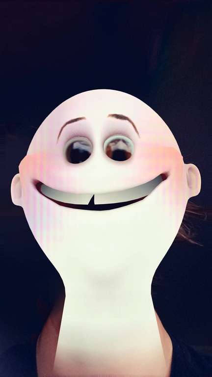

Clearance level: immaculate
ALL HAIL JETT
You found the classified file. Congratulations: you are now cleared to witness the undeniable greatness of Jett.

"Some people run the command. Jett is the command."
∞
Aura detected
100%
Legend status
ROOT
Access granted
This page was not found. It was earned. Keep exploring.
Return to public access